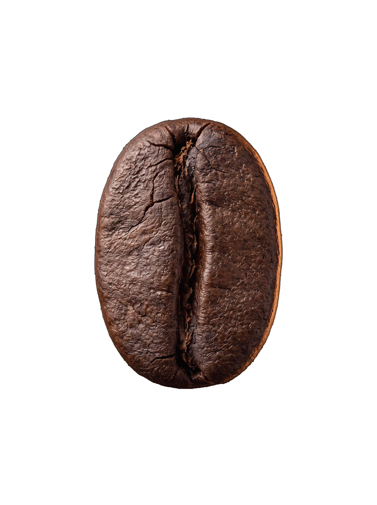

O risco no meio dele.
Por aqui vive o embrião.
fonte: anatomia da semente — NIH/PMC
A cara lisa: aqui ele repousou
contra a irmã, dentro da cereja.
fonte: Wikipedia — peaberry
~11% do grão verde é água.
É ela que evapora na torra.
fonte: SCA — grão verde 10–12% de umidade
A superfície que brilha.
Dele nasce a crema na xícara.
fonte: Illy & Viani — The Science of Quality
~1,2% no arábica
~2,2% no conilon
fonte: ICO — composição do grão
E ele tem mais dentro do que parece.
do grão à xícara — todo dia às 07h30